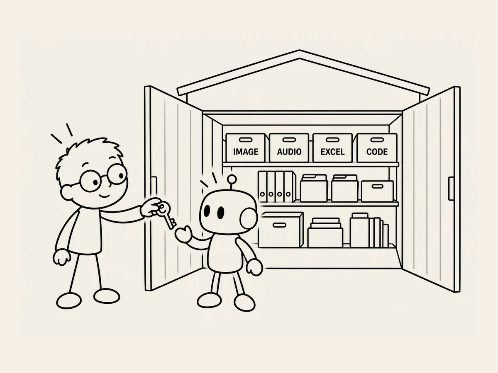

18.
AIに、僕の倉庫の扉を開けた。
AIと一緒に
ウェブサイトを作っているうちに、
ファイルが
どんどん増えていった。
画像。
音源。
Excel。
プログラムファイル。
設定ファイル。
フォルダもいくつもある。
それまでは、
必要なファイルを
僕が探して、
AIに見せていた。
そのうち、
ふと思った。
「ちょっと待って。
君が僕のパソコンにあるファイルを
直接見ればいいんじゃない？」
ChatGPTは、
僕のパソコンのフォルダを
直接開いて、
ファイルを探すことは
できなかった。
でも、
Codexは違った。
作業するフォルダを開けば、
その中のファイルを探して、
読んで、
必要なら
修正することもできた。
うーん。
これは、
全然違う。
今までは、
倉庫に何があるのか
僕が自分で探して、
一つずつ
持ってきて渡していた。
今度は、
ただ倉庫の扉を
開けるような感じだ。
「この中にあるよ。
自分で探して」
仕事のやり方が
進化した。
